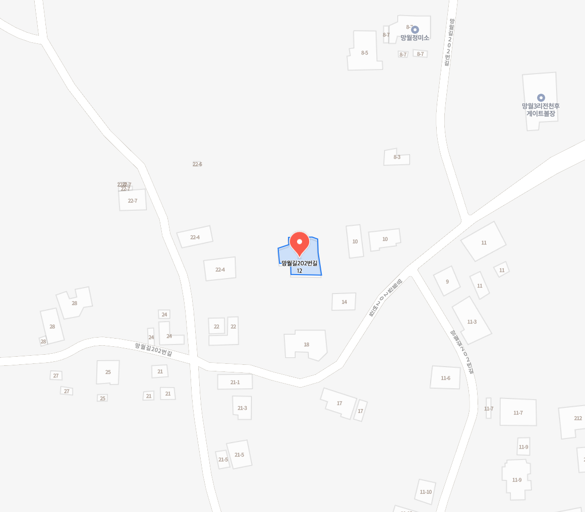

출발 · 망월리 1253
① 음악 1
망월길202번길 18
② 음악 2
망월길202번길 21-3
③ 음악 3
망월길202번길 11-7
④ 음악 4
망월길202번길 8-3
GPS SOUND WALK TEST
망월리 · 구역 테스트
걸어볼 순서
출발 → ① 음악 1 → ② 음악 2 → ③ 음악 3 → ④ 음악 4
각 구역은 약 14m 반경입니다. 같은 휴대폰 GPS로 구역 진입과 음악 전환을 테스트합니다.
GPS 대기 중
아래 버튼을 눌러 위치 사용을 시작하세요.
GPS 테스트 시작 →